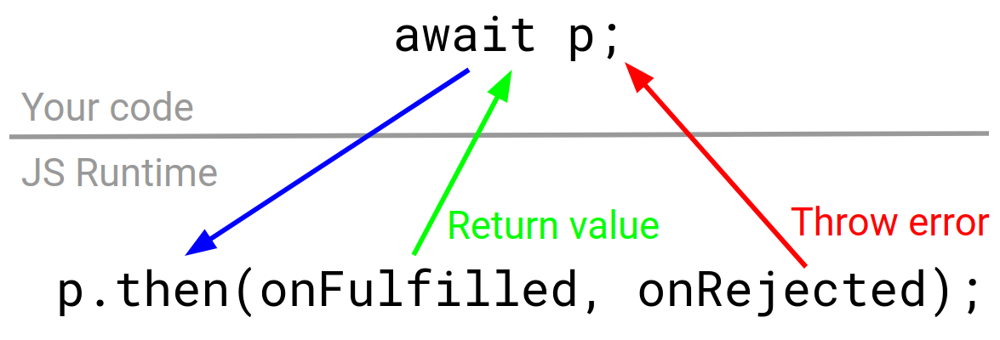

Async/await
is the single most valuable feature to land in the JavaScript language spec in the last 15 years. The event loop and asynchronous programming in general are exceptional for
building GUIs and servers, but callbacks make error handling tedious and code hard to
read. For example, when RisingStack asked Node.js developers
what they struggled with in 2017, asynchronous programming topped the list.
Async/await promises to make asynchronous code as clean and easy to
read as synchronous code in most use cases. Tangled promise chains and complex
user-land libraries like
async can be replaced with for loops,
if statements, and try/catch blocks that even the most junior of engineers can
make sense of.
The following JavaScript from a 2012 blog post is a typical
example of where code goes wrong with callbacks. This code works,
but it has a lot of error handling boilerplate and deeply nested if statements
that obfuscate the actual logic. Wrapping your mind around it takes a while,
and proper error handling means copy/pasting if (err != null) into every
callback.
functiongetWikipediaHeaders() {
// i. check if headers.txt exists
fs.stat('./headers.txt', function(err, stats) {
if (err != null) { throw err; }
if (stats == undefined) {
// ii. fetch the HTTP headersvar options = { host: 'www.wikipedia.org', port: 80 };
http.get(options, function(err, res) {
if (err != null) { throw err; }
var headers = JSON.stringify(res.headers);
// iii. write the headers to headers.txt
fs.writeFile('./headers.txt', headers, function(err) {
if (err != null) { throw err; }
console.log('Great Success!');
});
});
} else { console.log('headers already collected'); }
});
}
Below is the same code using async/await, assuming that stat(), get(), and
writeFile() are properly promisified.
You might not think async/await is a big deal. You might even think async/await
is a bad idea. I've been in your shoes: when I first learned about async/await in
2013, I thought it was unnecessary at best. But when I
started working with generator-based coroutines (the 2015 predecessor to async/await),
I was shocked at how quickly server crashes due to
TypeError: Cannot read property 'x' of undefined vanished. By the time async/await
became part of the JavaScript language spec in 2017, async/await was an
indispensable part of my dev practice.
Just because async/await is now officially part of JavaScript doesn't mean
the world is all sunshine and rainbows. Async/await is a new pattern that
promises to make day-to-day development work easier, but, like any pattern, you
need to understand it or you'll do more harm than good. If your async/await
code is a patchwork of copy/pasted StackOverflow answers, you're just trading
callback hell for the newly minted async/await hell.
The purpose of this book is to take you from someone who is casually acquainted
with promises and async/await to someone who is comfortable building and debugging
a complex app whose core logic is built on async/await. This book is only
52 pages and is meant to be read in about 2 hours total. You may read it all in
one sitting, but you would be better served reading one chapter at a time,
studying the exercises at the end, and getting a good night's sleep in between
chapters to really internalize the information.
This book is broken up into 4 chapters. Each chapter is 12 pages, including
exercises at the end of each chapter that highlight key lessons from the chapter.
The exercises require more thought than
code and should be easy to answer within a few minutes.
The first 3 chapters are focused on promise and async/await fundamentals, and strive
to avoid frameworks and outside dependencies. In particular, the code samples and exercises are meant to run in Node.js 8.x and will not use any transpilers
like Babel.
In the interest of providing realistic examples,
the code samples will use the superagent module for making HTTP requests. The
4th chapter will discuss integrating async/await with some common
npm modules.
Are you ready to master async/await? Let's get started!
Async/Await: The Good Parts
The async and await keywords are new additions to JavaScript as part of the
2017 edition of the language specification. The async keyword modifies a function,
either a normal function() {} or an arrow function () => {}, to mark it as an
async function. In an async function, you can use the await keyword to pause
the function's execution until a promise settles. In the below function, the await
keyword pauses the function's execution for approximately 1 second.
Example 1.1
asyncfunctiontest() {
// This function will print "Hello, World!" after 1 second.awaitnewPromise(resolve => setTimeout(() => resolve(), 1000));
console.log('Hello, World!');
}
test();
You can use the await keyword anywhere in the body of an async function. This means
you can use await in if statements, for loops, and try/catch blocks. Below
is another way to pause an async function's execution for about 1 second.
Example 1.2
asyncfunctiontest() {
// Wait for 100ms 10 times. This function also prints after 1 second.for (let i = 0; i < 10; ++i) {
awaitnewPromise(resolve => setTimeout(() => resolve(), 100));
}
console.log('Hello, World!');
}
test();
There is one major restriction for using await: you can only use await
within the body of a function that's marked async. The following code throws a
SyntaxError.
In particular, you can't use await in a closure embedded in an async function, unless
the closure is also an async function. The below code also throws a SyntaxError.
Example 1.4
const assert = require('assert');
asyncfunctiontest() {
const p = Promise.resolve('test');
assert.doesNotThrow(function() {
// "SyntaxError: Unexpected identifier" because the above function// is **not** marked async. "Closure" = function inside a functionawait p;
});
}
As long as you don't create a new function, you can use await underneath any
number of for loops and if statements.
Example 1.5
asyncfunctiontest() {
while (true) {
// Convoluted way to print out "Hello, World!" once per second by// pausing execution for 200ms 5 timesfor (let i = 0; i < 10; ++i) {
if (i % 2 === 0) {
awaitnewPromise(resolve => setTimeout(() => resolve(), 200));
}
}
console.log('Hello, World!');
}
}
Return Values
You can use async/await for more than just pausing execution. The return
value of await is the value the promise is fulfilled with. This means you can
assign a variable to an asynchronously-computed value in code that looks
synchronous.
Example 1.6
asyncfunctiontest() {
// You can `await` on a non-promise without getting an error.let res = await'Hello World!';
console.log(res); // "Hello, World!"const promise = newPromise(resolve => {
// This promise resolves to "Hello, World!" after 1s
setTimeout(() => resolve('Hello, World!'), 1000);
});
res = await promise;
// Prints "Hello, World!". `res` is equal to the value the// promise resolved to.console.log(res);
// Prints "Hello, World!". You can use `await` in function params!console.log(await promise);
}
An async function always returns a promise. When you return from an async
function, JavaScript resolves the promise to the value you returned. This means
calling async functions from other async functions is very natural. You can
await on the async function call and get the async function's "return value".
Example 1.7
asyncfunctioncomputeValue() {
awaitnewPromise(resolve => setTimeout(() => resolve(), 1000));
// "Hello, World" is the _resolved value_ for this function callreturn'Hello, World!';
}
asyncfunctiontest() {
// Prints "Hello, World!" after 1s. `computeValue` returns a promise!console.log(await computeValue());
}
This book will refer to the value you return from an async function as the
resolved value. In computeValue above, "Hello, World!" is the resolved
value, computeValue() still returns a promise. This distinction is subtle
but important: the value you return from an async function body is not
the value that an async function call like computeValue() without await
returns.
You can also return a promise from an async function. In that case, the
promise the async function returns will be fulfilled or rejected whenever the
resolved value promise is fulfilled or rejected. Below is another async function that fulfills to 'Hello, World!' after 1 second:
Example 1.8
asyncfunctioncomputeValue() {
// The resolved value is a promise. The promise returned from// `computeValue()` will be fulfilled with 'Hello, World!'returnnewPromise(resolve => {
setTimeout(() => resolve('Hello, World!'));
}, 1000);
}
If you return a promise from an async function, the resolved value will
still not equal the return value. The below example demonstrates that the
resolvedValue promise that the function body returns is not the same as
the return value from computeValue().
Example 1.9
let resolvedValue = Promise.resolve('Hello, World!');
const computeValue = async () => resolvedValue;
asyncfunctiontest() {
// No `await` below, so `returnValue` will be a promiseconst returnValue = computeValue();
// `false`. The return value and resolved value are always differentconsole.log(returnValue === resolvedValue);
}
Async/await beginners often mistakenly think they need to return a promise
from an async function. They likely read that an async function always returns
a promise and think they're responsible for returning a promise. An async function
always returns a promise, but, like in example 1.9, JavaScript creates the returned promise for you.
Example 1.10
asyncfunctioncomputeValue() {
// Adding `Promise.resolve()` below is unnecessary. It adds// perf overhead because you're creating an unnecessary promise.// "Unnecessary code is not as harmless as I used to think. It// sends the misleading signal that it's necessary." - Paul GrahamreturnPromise.resolve('Hello, World!');
}
Error Handling
One of the most important properties of async/await is that you can use try/catch
to handle asynchronous errors. Remember that a promise may be either fulfilled
or rejected. When a promise p is fulfilled, JavaScript evaluates await p
to the promise's value. What about if p is rejected?
If p is rejected, await p throws an error that you can catch with a
normal JavaScript try/catch. Note that the await statement is what throws
an error, not the promise instantiation.
This try/catch behavior is a powerful tool for consolidating error handling.
The try/catch block above can catch synchronous errors as well as asynchronous
ones. Suppose you have code that throws a TypeError: cannot read property 'x' of undefined error:
Example 1.12
asyncfunctiontest() {
try {
const bad = undefined;
bad.x;
const p = Promise.reject(newError('Oops!'));
await p;
} catch (error) {
// "cannot read property 'x' of undefined"console.log(error.message);
}
}
In callback-based code, you had to watch out for synchronous errors like TypeError
separately from asynchronous errors. This lead to a lot of server crashes and
red text in Chrome consoles, because discipline doesn't scale.
Consider using a callback-based approach instead of async/await. Suppose you have
a black-box function test() that takes a single parameter, a callback.
If you want to ensure you catch every possible error, you need 2 try/catch
calls: one around test() and one around callback(). You also need to check
whether test() called your callback with an error. In other words, every
single async operation needs 3 distinct error handling patterns!
Example 1.13
functiontestWrapper(callback) {
try {
// There might be a sync error in `test()`
test(function(error, res) {
// `test()` might also call the callback with an errorif (error) {
return callback(error);
}
// And you also need to be careful that accessing `res.x` doesn't// throw **and** calling `callback()` doesn't throw.try {
return callback(null, res.x);
} catch (error) {
return callback(error);
}
});
}
}
When there's this much boilerplate for error handling, even the most rigorous
and disciplined developers end up missing a spot. The result is uncaught errors,
server downtime, and buggy user interfaces. Below is an equivalent example with
async/await. You can handle the 3 distinct error cases from example 1.12 with
a single pattern.
Example 1.14
asyncfunctiontestWrapper() {
try {
// `try/catch` will catch sync errors in `test()`, async promise// rejections, and errors with accessing `res.x`.const res = await test();
return res.x;
} catch (error) {
throw error;
}
}
Let's take a look at how the throw keyword works with async functions now that
you've seen how try/catch works. When you throw in an async function,
JavaScript will reject the returned promise.
Remember that the value you return from an async function is called the
resolved value. Similarly, this book will refer to the value you throw in
an async function as the rejected value.
Example 1.15
asyncfunctioncomputeValue() {
// `err` is the "rejected value"const err = newError('Oops!');
throw err;
}
asyncfunctiontest() {
try {
const res = await computeValue();
// Never runsconsole.log(res);
} catch (error) {
console.log(error.message); // "Oops!"
}
}
Remember that the computeValue() function call itself does not throw an
error in the test() function. The await keyword is what throws an error that
you can handle with try/catch. The below code will print "No Error" unless you
uncomment the await block.
Example 1.16
asyncfunctioncomputeValue() {
thrownewError('Oops!');
};
asyncfunctiontest() {
try {
const promise = computeValue();
// With the below line commented out, no error will be thrown// await promise;console.log("No Error");
} catch (error) {
console.log(error.message); // Won't run
}
}
Just because you can try/catch around a promise doesn't necessarily mean you
should. Since async functions return promises, you can also use .catch():
Both try/catch and catch() have their place. In particular, catch()
makes it easier to centralize your error handling. A common async/await
novice mistake is putting try/catch at the top of every single function.
If you want a common handleError() function to ensure you're handing all
errors, you're better off using catch().
Example 1.18
// If you find yourself doing this, stop!asyncfunctionfn1() {
try {
/* Bunch of logic here */
} catch (err) {
handleError(err);
}
}
// Do this insteadasyncfunctionfn2() {
/* Bunch of logic here */
}
fn2().catch(handleError);
Retrying Failed Requests
Let's tie together loops, return values, and error handling to handle a challenge
that's painful with callbacks: retrying failed requests. Suppose you had to make
HTTP requests to an unreliable API.
With callbacks or promise chains, retrying failed requests requires recursion,
and recursion is less readable than the synchronous alternative of writing
a for loop. Below is a simplified implementation of a getWithRetry() function
using callbacks and the superagent HTTP client.
Recursion is subtle and tricky to understand relative to a loop.
Plus, the above code ignores the possibility of sync errors, because the
try/catch spaghetti highlighted in example 1.13 would make this example
unreadable. In short, this pattern is both brittle and cumbersome.
With async/await, you don't need recursion and you need one try/catch to
handle sync and async errors. The async/await implementation is built on for
loops, try/catch, and other constructs that should be familiar to even the
most junior of engineers.
Example 1.20
asyncfunctiongetWithRetry(url, numRetries) {
let lastError = null;
for (let i = 0; i < numRetries; ++i) {
try {
// Note that `await superagent.get(url).body` does **not** workconst res = await superagent.get(url);
// Early return with async functions works as you'd expectreturn res.body;
} catch (error) {
lastError = error;
}
}
throw lastError;
}
More generally, async/await makes executing async operations in series trivial.
For example, let's say you had to load a list of blog posts from an HTTP API
and then execute a separate HTTP request to load the comments for each blog
post. This example uses the excellent JSONPlaceholder API that provides good test data.
Example 1.21
asyncfunctionrun() {
const root = 'https://jsonplaceholder.typicode.com';
const posts = await getWithRetry(`${root}/posts`, 3);
for (const { id } of posts) {
const comments =
await getWithRetry(`${root}/comments?postId=${id}`, 3);
console.log(comments);
}
}
If this example seems trivial, that's good, because that's how programming
should be. The JavaScript community has created an incredible hodge-podge of
tools for executing asynchronous tasks in series, from async.waterfall() to Redux sagas to zones to co. Async/await makes all of these libraries
and more unnecessary. Do you even need Redux middleware anymore?
This isn't the whole story with async/await. This chapter glossed over numerous
important details, including how promises integrate with async/await and
what happens when two asynchronous functions run simultaneously. Chapter 2
will focus on the internals of promises, including the difference between
"resolved" and "fulfilled", and explain why promises are perfectly suited
for async/await.
Exercise 1: HTTP Request Loops
The purpose of this exercise is to get comfortable with using
loops and if statements with async/await. You will need to use
the fetch() API
to get a list of blog posts on
thecodebarbarian.com, and then
execute a separate fetch() to get the raw markdown content
for each blog post.
Below are the API endpoints. The API endpoints are hosted on
Google Cloud Functions at https://us-central1-mastering-async-await.cloudfunctions.net.
/posts
gets a list of blog posts. Below is an example post:
{ "src":"./lib/posts/20160304_circle_ci.md",
"title":"Setting Up Circle CI With Node.js",
"date":"2016-03-04T00:00:00.000Z",
"tags":["NodeJS"],
"id":51 }
/post?id=${id}
gets the markdown content of a blog post by its id property.
The above blog post has id = 0, so you can get its content from
this endpoint: https://us-central1-mastering-async-await.cloudfunctions.net/post?id=0. Try opening this URL in your browser, the output looks
like this:
{"content":"*This post was featured as a guest blog post..."}
Loop through the blog posts and find the id of the first post
whose content contains the string "async/await hell".
const root = 'https://' +
'us-central1-mastering-async-await.cloudfunctions.net';
asyncfunctionrun() {
// Example of using `fetch()` APIconst res = await fetch(`${root}/posts`);
console.log(await res.json());
}
run().catch(error =>console.error(error.stack));
Exercise 2: Retrying Failed Requests
The purpose of this exercise is to implement a function that retries failed
HTTP requests using async/await and try/catch to handle errors. This example
builds on the correct answer to exercise 1.1, but with the added caveat that
every other fetch() request fails.
For this exercise, you need to implement the getWithRetry() function below.
This function should fetch() the url, and if the request fails this
function should retry the request up to numRetries times. If you see
"Correct answer: 76", congratulations, you completed this exercise.
Like exercise 1.1, you can complete this exercise locally by copying the
below code and using the node-fetch npm module.
You can also complete this exercise in your browser on CodePen at the following
url: http://bit.ly/async-await-exercise-2.
asyncfunctiongetWithRetry(url, numRetries) {
return fetch(url).then(res => res.json());
}
// Correct answer for exercise 1.1 belowasyncfunctionrun() {
const root = 'https://' +
'us-central1-mastering-async-await.cloudfunctions.net';
const posts = await getWithRetry(`${root}/posts`, 3);
for (const post of posts) {
console.log(`Fetch post ${post.id}`);
const content = await getWithRetry(`${root}/post?id=${post.id}`, 3);
if (content.content.includes('async/await hell')) {
console.log(`Correct answer: ${post.id}`);
break;
}
}
}
run().catch(error =>console.error(error.stack));
// This makes every 2nd `fetch()` failconst _fetch = fetch;
let calls = 0;
(window || global).fetch = function(url) {
const err = newError('Hard-coded fetch() error');
return (++calls % 2 === 0) ? Promise.reject(err) : _fetch(url);
}
Promises From The Ground Up
Async/await is built on top of promises. Async functions return promises, and
await only pauses an async function when it operates on a promise.
In order to grok the internals of async/await, you need to understand how
promises work from base principles. JavaScript promises didn't become what they
are by accident, they were carefully designed to enable paradigms like
async/await.
In the ES6 spec, a promise is a class whose
constructor takes an executor function. Instances of the Promise class have a
then() function. Promises in the ES6 spec have several other properties, but for now you can
ignore them. Below is a skeleton of a simplified Promise class.
Example 2.1
classPromise{
// `executor` takes 2 parameters, `resolve()` and `reject()`.// The executor function is responsible for calling `resolve()`// or `reject()` when the async operation succeeded or failedconstructor(executor) {}
// `onFulfilled` is called if the promise is fulfilled, and// `onRejected` if the promise is rejected. For now, you can// think of 'fulfilled' and 'resolved' as the same thing.
then(onFulfilled, onRejected) {}
}
A promise is a state machine with 3 states:
pending: the initial state, means that the underlying operation is in progress
fulfilled: the underlying operation succeeded and has an associated value
rejected: the underlying operation failed and has an associated error
A promise that is not pending is called settled. In other words, a settled
promise is either fulfilled or rejected. Once a promise is settled,
it cannot change state.
For example, the below promise will remain fulfilled despite the reject() call.
Once you've called resolve() or reject() once, calling resolve() or reject()
is a no-op. This detail is pivotal for async/await, because how would await work
if a promise changed state from 'FULFILLED' to 'REJECTED' after an async function was done?
Example 2.2
const p = newPromise((resolve, reject) => {
resolve('foo');
// The below `reject()` is a no-op. A fulfilled promise stays// fulfilled with the same value forever.
reject(newError('bar'));
});
Below is a diagram showing the promise state machine.
With this in mind, below is a first draft of a promise constructor that implements
the state transitions. Note that the property names state, resolve,
reject, and value used below are non-standard. Actual ES6 promises do not
expose these properties publicly, so don't try to use p.value or p.resolve()
with a native JavaScript promise.
Example 2.4
classPromise{
constructor(executor) {
this.state = 'PENDING';
this.chained = []; // Not used yetthis.value = undefined;
try {
// Reject if the executor throws a sync error
executor(v =>this.resolve(v), err => this.reject(err));
} catch (err) { this.reject(err); }
}
// Define `resolve()` and `reject()` to change the promise state
resolve(value) {
if (this.state !== 'PENDING') return;
this.state = 'FULFILLED';
this.value = value;
}
reject(value) {
if (this.state !== 'PENDING') return;
this.state = 'REJECTED';
this.value = value;
}
}
The promise constructor manages the promise's state and calls the executor
function. You also need to implement the then() function that
let clients define handlers that run when a promise is settled. The then()
function takes 2 function parameters, onFulfilled() and onRejected().
A promise must call the onFulfilled() callback if the promise is fulfilled,
and onRejected() if the promise is rejected.
For now, then() is simple, it adds onFulfilled() and
onRejected() to an array chained. Then, resolve() and reject() will call
them when the promise is fulfilled or rejected. If the promise is already
settled, the then() function will queue up onFulfilled() or onRejected()
to run on the next tick of the event loop using setImmediate().
Example 2.5
classPromise{
// Constructor is the same as before, omitted for brevity
then(onFulfilled, onRejected) {
const { value, state } = this;
// If promise is already settled, enqueue the right handlerif (state === 'FULFILLED') return setImmediate(onFulfilled, value);
if (state === 'REJECTED') return setImmediate(onRejected, value);
// Otherwise, track `onFulfilled` and `onRejected` for laterthis.chained.push({ onFulfilled, onRejected });
}
resolve(value) {
if (this.state !== 'PENDING') return;
this.state = 'FULFILLED';
this.value = value;
// Loop through the `chained` array and find all `onFulfilled()`// functions. Remember that `.then(null, onRejected)` is valid.this.chained.
filter(({ onFulfilled }) =>typeof onFulfilled === 'function').
// The ES6 spec section 25.4 says `onFulfilled` and// `onRejected` must be called on a separate event loop tick
forEach(({ onFulfilled }) => setImmediate(onFulfilled, value));
}
reject(value) {
if (this.state !== 'PENDING') return;
this.state = 'REJECTED';
this.value = value;
this.chained.
filter(({ onRejected }) =>typeof onRejected === 'function').
forEach(({ onFulfilled }) => setImmediate(onFulfilled, value));
}
}
This Promise class, while simple, represents most of the work necessary
to integrate with async/await. The await keyword doesn't explicitly check
if the value it operates on is instanceof Promise, it only checks for the
presence of a then() function. In general, any object that has a then()
function is called a thenable in JavaScript. Below is an example of using the
custom Promise class with async/await.
Example 2.6
asyncfunctiontest() {
// Works, even though this is a custom `Promise` class. All you// need is a `then()` function to integrate with `await`.const res = awaitnewPromise(resolve => {
setTimeout(() => resolve('Hello'), 50);
});
assert.equal(res, 'Hello');
}
Promise Chaining
One key feature that the promise implementation thus far does not support is
promise chaining. Promise chaining is a common pattern for keeping async code
flat, although it has become far less useful now that generators and async/await
have widespread support. Here's how the getWikipediaHeaders() function
from the introduction looks with promise chaining:
Example 2.7
functiongetWikipediaHeaders() {
return stat('./headers.txt').
then(res => {
if (res == null) {
// If you return a promise from `onFulfilled()`, the next// `then()` call's `onFulfilled()` will get called when// the returned promise is fulfilled...return get({ host: 'www.wikipedia.org', port: 80 });
}
return res;
}).
then(res => {
// So whether the above `onFulfilled()` returns a primitive or a// promise, this `onFulfilled()` gets the headers objectreturn writeFile('./headers.txt', JSON.stringify(res.headers));
}).
then(() =>console.log('Great success!')).
catch(err =>console.err(err.stack));
}
While async/await is a superior pattern, promise chaining is still useful,
and still necessary to complete a robust promise implementation. In order
to implement promise chaining, you need to make 3 changes to the promise
implementation from example 2.5:
The then() function needs to return a promise. The promise returned from then() should be resolved with the value returned from onFulfilled()
The resolve() function needs to check if value is a thenable, and, if so, transition to fulfilled or rejected only when value transitions to fulfilled or rejected.
If resolve() is called with a thenable, the promise needs to stay 'PENDING', but future calls to resolve() and reject() must be ignored.
The first change, improving the then() function, is shown below. There are
two other changes: onFulfilled() and onRejected() now have default
values, and are wrapped in a try/catch.
Example 2.8
then(_onFulfilled, _onRejected) {
// `onFulfilled` is a no-op by default...if (typeof _onFulfilled !== 'function') _onFulfilled = (v => v);
// and `onRejected` just rethrows the error by defaultif (typeof _onRejected !== 'function') {
_onRejected = err => { throw err; };
}
returnnewPromise((resolve, reject) => {
// Wrap `onFulfilled` and `onRejected` for two reasons:// consistent async and `try/catch`const onFulfilled = res => setImmediate(() => {
try {
resolve(_onFulfilled(res));
} catch (err) { reject(err); }
});
const onRejected = err => setImmediate(() => {
try {
// Note this is `resolve()`, **not** `reject()`. The `then()`// promise will be fulfilled if `onRejected` doesn't rethrow
resolve(_onRejected(err));
} catch (err) { reject(err); }
});
if (this.state === 'FULFILLED') return onFulfilled(this.value);
if (this.state === 'REJECTED') return onRejected(this.value);
this.chained.push({ onFulfilled, onRejected });
});
}
Now then() returns a promise. However, there's still work to be done: if
onFulfilled() returns a promise, resolve() needs to be able to handle it.
In order to support this, the resolve() function will need to use then()
in a two-step recursive dance. Below is the expanded resolve() function
that shows the 2nd necessary change.
Example 2.9
resolve(value) {
if (this.state !== 'PENDING') return;
if (value === this) {
returnthis.reject(TypeError(`Can't resolve promise with itself`));
}
// Is `value` a thenable? If so, fulfill/reject this promise when// `value` fulfills or rejects. The Promises/A+ spec calls this// process "assimilating" the other promise (resistance is futile).const then = this._getThenProperty(value);
if (typeof then === 'function') {
try {
return then.call(value, v => this.resolve(v),
err => this.reject(err));
} catch (error) {
return reject(error);
}
}
// If `value` is **not** a thenable, transition to fulfilledthis.state = 'FULFILLED';
this.value = value;
this.chained.
forEach(({ onFulfilled }) => setImmediate(onFulfilled, value));
}
// Helper to wrap getting the `then()` property because the Promises/A+// spec has 2 tricky details: you can only access the `then` property// once, and if getting `value.then` throws the promise should reject
_getThenProperty(value) {
if (value == null) returnnull;
if (!['object', 'function'].includes(typeof value)) returnnull;
try {
return value.then;
} catch (error) {
// Unlikely edge case, Promises/A+ section 2.3.3.2 enforces thisthis.reject(error);
}
}
Finally, the third change, ensuring that a promise doesn't change state
once resolve() is called with a thenable, requires changes to both
resolve() and the promise constructor. The motivation for this change
is to ensure that p2 in the below example is fulfilled, not rejected.
Example 2.10
const p1 = newPromise(resolve => setTimeout(resolve, 50));
const p2 = newPromise(resolve => {
resolve(p1);
thrownewError('Oops!'); // Ignored because `resolve()` was called
});
One way to achieve this is to create a helper function that wraps
this.resolve() and this.reject() that ensures resolve() and reject()
can only be called once.
Example 2.11
// After you call `resolve()` with a promise, extra `resolve()` and// `reject()` calls will be ignored despite the 'PENDING' state
_wrapResolveReject() {
let called = false;
const resolve = v => {
if (called) return;
called = true;
this.resolve(v);
};
const reject = err => {
if (called) return;
called = true;
this.reject(err);
};
return { resolve, reject };
}
Once you have this _wrapResolveReject() helper, you need to use it in
resolve():
Example 2.12
resolve(value) {
// ...if (typeof then === 'function') {
// If `then()` calls `resolve()` with a 'PENDING' promise and then// throws, the `then()` promise will be fulfilled like example 2.10const { resolve, reject } = this._wrapResolveReject();
try {
return then.call(value, resolve, reject);
} catch (error) { return reject(error); }
}
// ...
}
Also, you need to use _wrapResolveReject() in the constructor itself:
Example 2.13
constructor(executor) { // Beginning omitted for brevity// This makes the promise class handle example 2.10 correctly...const { resolve, reject } = this._wrapResolveReject();
try {
executor(resolve, reject);
// because if `executor` calls `resolve()` and then throws,// the below `reject()` is a no-op
} catch (err) { reject(err); }
}
The ES6 promise spec is a superset of the Promises/A+ spec that adds several
convenient helper methods on top of the then() function. The most commonly
used helper is the catch() function. Like the synchronous catch keyword, the
catch() function typically appears at the end of a promise chain to handle
any errors that occurred.
The catch() function may sound complex, but it is just a thin layer of syntactic
sugar on top of then(). The catch() is so sticky because
the name catch() is a powerful metaphor for explaining what this helper is used for.
Below is the full implementation of catch().
Why does this work? Recall from example 2.8 that then() has a default onRejected()
argument that rethrows the error. So when a promise is rejected, subsequent then()
calls that only specify an onFulfilled() handler are skipped.
Example 2.15
const originalError = newError('Oops!');
const p = newPromise((_, reject) => reject(originalError)).
then(() =>console.log('This will not print')).
then(() =>console.log('Nor will this')).
// The `onFulfilled()` handlers above get skipped. Each of the// `then()` promises above reject with the original errorcatch(err => assert.ok(err === originalError));
There are several other helpers in the ES6 promise spec. The Promise.resolve()
and Promise.reject() helpers are both commonly used for testing and examples,
as well as to convert a thenable into a fully fledged promise.
Example 2.16
// Yes, this is actually a thenable. When it comes to promises, the// letter of the law overrules the spirit of the law.const thenable = { then: () => { thrownewError('Oops!'); } };
// But `thenable` doesn't have `catch()`, so use `Promise.resolve()`// to convert it to a promise and use `catch()`const p = Promise.resolve(thenable).
catch(err =>console.log(err.message)); // Prints "Oops!"
Below is the implementation of resolve() and reject().
The Promise.all() function is another important helper, because it lets you execute multiple promises in
parallel and await on the result. The below code will run two instances of
the run() function in parallel, and pause execution until they're both done.
Promise.all() is the preferred mechanism for executing async functions in parallel.
To execute async functions in series, you would use a for loop and await on
each function call.
Promise.all() is just a convenient wrapper around calling then() on an array
of promises and waiting for the result. Below is a simplified implementation of
Promise.all():
Example 2.19
static all(arr) {
let remaining = arr.length;
if (remaining === 0) returnPromise.resolve([]);
// `result` stores the value that each promise is fulfilled withlet result = [];
returnnewPromise((resolve, reject) => {
// Loop through every promise in the array and call `then()`. If// the promise fulfills, store the fulfilled value in `result`.// If any promise rejects, the `all()` promise rejects immediately.
arr.forEach((p, i) => p.then(
res => {
result[i] = res;
--remaining || resolve(result);
},
err => reject(err)));
});
}
There is one more helper function defined in the ES6 spec, Promise.race(),
that will be an exercise. Other than race() and some minor details like
support for subclassing, the promise implementation in this chapter is
compliant with the ES6 spec. In the next chapter, you'll use your
understanding of promises to monkey-patch async/await and figure out what's
happening under the hood.
The key takeaways from this journey
of building a promise library from scratch are:
A promise can be in one of 3 states: pending, fulfilled, or rejected. It can also be locked in to match the state of another promise if you call resolve(promise).
Once a promise is settled, it stays settled with the same value forever
The then() function and the promise constructor are the basis for all other promise functions. The catch(), all(), resolve(), and reject() helpers are all syntactic sugar on top of then() and the constructor.
But before you start tinkering with the internals of async/await, here's 2 exercises
to expand your understanding of promises.
Exercise 1: Promise Chains in Action
The purpose of this exercise is to get comfortable with using promise chaining.
While promise chaining is less useful now that async/await exists, promise
chaining is a useful complement to async/await in much the same way that
forEach() and filter() are useful for chaining array transformations.
Using the same endpoints as Exercise 1.1, which are explained below, find the blog
post entitled "Unhandled Promise Rejections in Node.js", load its content, and find the number of times the phrase "async/await" appears in the content.
Below are the API endpoints. The API endpoints are hosted on Google Cloud Functions
at https://us-central1-mastering-async-await.cloudfunctions.net
/posts gets a list of blog posts. Below is an example post:
{ "src":"./lib/posts/20160304_circle_ci.md",
"title":"Setting Up Circle CI With Node.js",
"date":"2016-03-04T00:00:00.000Z",
"tags":["NodeJS"],
"id":51 }
/post?id=${id} gets the markdown content of a blog post by its id property. The above blog post has id = 0, so you can get its content from this endpoint: https://us-central1-mastering-async-await.cloudfunctions.net/post?id=0. Try opening this URL in your browser, the output looks like this:
{"content":"*This post was featured as a guest blog post..."}
const root = 'https://' +
'us-central1-mastering-async-await.cloudfunctions.net';
functionrun() {
// Example of using `fetch()` APIreturn fetch(`${root}/posts`).
then(res => res.json()).
then(posts =>console.log(posts[0]));
}
run().catch(error =>console.error(error.stack));
Exercise 2: Promise.race()
The ES6 promise spec has one more helper method that this book hasn't covered yet:
Promise.race().
Like Promise.all(), Promise.race() takes in an array of promises, but
Promise.race() returns a promise that resolves or rejects to the same value
that the first promise to settle resolves or rejects to. For example:
Implement a function race(), that, given an array of promises, returns a
promise that resolves or rejects as soon as one of the promises in the array
settles, with the same value.
Hint: remember, once a promise is settled, calling resolve() or reject() is a
no-op.
Below is the starter code. You may copy this code and complete this exercise in
Node.js, or you may complete it in your browser
on CodePen at http://bit.ly/async-await-exercise-22.
functionrace(arr) {
returnPromise.reject(newError('Implement this function'));
}
// The below are tests to help you check your `race()` implementation
test1().then(test2).then(() =>console.log('Done!')).
catch(error =>console.error(error.stack));
functiontest1() {
const p1 = newPromise(resolve => setTimeout(() => resolve(1), 10));
const p2 = newPromise(resolve => setTimeout(() => resolve(2), 100));
const f = v => { if (v !== 1) throwError('test1 failed!'); };
return race([p1, p2]).then(f);
}
functiontest2() {
const error = newError('Expected error');
const p1 = newPromise(resolve => setTimeout(() => resolve(1), 100));
const p2 = newPromise(resolve => setTimeout(() => resolve(2), 100));
const p3 = newPromise((resolve, reject) => reject(error));
return race([p1, p2, p3]).then(
() => { throwError('test2: `race()` promise must reject'); },
e => { if (e !== error) throwError('test2: wrong error'); });
}
Async/Await Internals
Promises are the fundamental tool for integrating with async/await. Now
that you've seen how promises work from the ground up, it's time to go from
the micro to the macro and see what happens when you await on a promise.
Even though async functions are flat like synchronous functions, they're
as asynchronous as the most callback-laden banana code under the hood.
As you might have already guessed, await makes JavaScript call then()
under the hood.
Example 3.1
const p = {
then: onFulfilled => {
// Prints "then(): function () { [native code] }"console.log('then():', onFulfilled.toString());
// Only one entry in the stack:// Error// at Object.then (/examples/chapter3.test.js:8:21)console.log(newError().stack);
onFulfilled('Hello, World!');
}
};
console.log(await p); // Prints "Hello, World!"
The await keyword causes JavaScript to pause execution until the next
iteration of the event loop. In the below code, the console.log() after
the await runs after the ++currentId code, even though the increment
is in a callback. The await keyword causes the async function to pause
and then resume later.
Notice that the then() function runs on the next tick, even though it is
fully synchronous. This means that await always pauses execution until at
least the next tick, even if the thenable is not async.The same thing happens
when the awaited promise is rejected. If you call
onRejected(err), the await keyword throws err in your function body.
Recall that return in an async function resolves the promise that the async
function returns. This means you can return a promise. What's the difference
between await and return? The obvious answer is that, when you await on
a promise, JavaScript pauses execution of the async function and resumes later,
but when you return a promise, JavaScript finishes executing the async
function. JavaScript doesn't "resume" executing the function after you return.
The obvious answer is correct, but has some non-obvious implications
that tease out how await works. If you wrap await p in a try/catch
and p is rejected, you can catch the error. What happens if you
instead return p?
Notice that try/catch does not catch the rejected promise that you
returned. Why does only await give you a catchable error when the promise
is rejected? Because await throws the error when it resumes execution.
When you return a promise, JavaScript stops executing your async function
body and kicks off the resolve() process on the async function promise.
On the other hand, when you await on a promise, JavaScript pauses executing
your async function and resumes once the promise is settled. When JavaScript
resumes your async function after await, it throws an error if the awaited
promise rejected. Below is a flow chart showing what happens when you await
on a promise.

On the other hand, when you return a promise from an async function, your
promise goes into the JavaScript runtime and never goes back into your code,
so try/catch won't handle the error in example 3.4. Below are a couple
alternatives that catch the error: example 3.5 assigns await p to a
variable v and then returns the variable, and example 3.6 uses return await.
Both approaches work, but example 3.5 is simpler and less confusing. Seeing
return await is a head-scratcher for engineers that aren't JavaScript experts,
and that's antithetical to the goal of making asynchronous code easy for
average developers.
Concurrency
So far, you've seen that await p makes JavaScript pause your async function,
call p.then(), and resume once the promise is settled. What does this mean
for running multiple async functions in parallel, especially given that
JavaScript is single threaded?
The "JavaScript is single threaded" concept means that, when a normal JavaScript
function is running, no other JavaScript can run. For example, the below code
will never print anything. In other languages, a construct like setImmediate()
may run logic in a separate thread and print even while an infinite loop is
spinning, but JavaScript does not allow that.
Example 3.7
setImmediate(() =>console.log('Hello, World!'));
// This loop will spin forever, and so you'll never get back into// the event loop and the above `console.log()` will never run.while (true) {}
JavaScript functions are like the Pauli Exclusion Principle in physics:
no two normal JavaScript functions can be running in the same memory space at
the same time. Closures (callbacks) are separate functions, so in the below
example, foo(), bar(), and baz() all run separately.
Example 3.8
functionfoo() {
let x = 0;
// When `foo()` is done, `bar()` will run later but still have// access to `x`
setImmediate(bar);
// Stop running `foo()` until `baz()` is done
baz();
functionbar() {
++x;
}
functionbaz() {
++x;
}
}
Async functions follow the same rule: no two functions can be running at the
same time. But, any number of async functions can be paused at the same time
as long as you don't run out of memory, and other functions can run when an
async function is paused.
Example 3.9
run().catch(error =>console.error(error.stack));
asyncfunctionrun() {
// This will print, because `run()` is paused when you `await`
setImmediate(() =>console.log('Hello, World!'));
// Each iteration of the loop pauses the functionwhile (true) { awaitnewPromise(resolve => setImmediate(resolve)); }
}
This makes async functions useful for breaking up long-running synchronous
functions.
For example, suppose you want to run two functions in
parallel that each compute a large Fibonacci number. Without async/await,
you'd need tricky recursion. Async/await makes this
task trivial.
Example 3.10
awaitPromise.all([fibonacci(50000), fibonacci(50000)]);
asyncfunctionfibonacci(n) {
let [prev2, prev1, cur] = [1, 1, 1];
for (let i = 2; i < n; ++i) {
// Pause this `fibonacci()` call, let the other call make progressawaitnewPromise(resolve => setImmediate(resolve));
// "Fib: 10000"// "Fib: 10000"// "Fib: 20000" ...if (i % 10000 === 0) console.log('Fib:', i);
cur = prev1 + prev2;
prev2 = prev1;
prev1 = cur;
}
return cur;
}
This example is simple but contrived. A more realistic example would be
an Express API endpoint that runs a potentially expensive algorithm like
clustering.
I have used this pattern in a production Express API to run an
O(n^5) clustering algorithm in a route without blocking other routes.
The key takeaway here is that an async function will run with no interruptions
unless you pause it with await or exit the function with return or throw.
JavaScript is still single threaded in the conventional sense, so two async
functions can't be running at the same time, but you can pause your async
function using await to give the event loop and other functions a chance to
run.
Async/Await vs Generators
Async/await has a lot in common with generators, a feature that JavaScript introduced in the 2015 edition of the
language spec. Like async functions, generator functions can be paused and
later resumed. There
are two major differences between generator functions and async functions:
The keyword you use to pause a generator function is yield, not await.
When you pause a generator function, control goes back to your JavaScript code, rather than the JS interpreter. You resume the generator function by calling next() on a generator object.
The below example demonstrates using yield to pause the generator and next() to resume it.
Example 3.11
// The `function*` syntax makes this function a generator functionconst generatorFunction = function*() {
console.log('Step 1');
yield1;
console.log('Step 2');
yield2;
console.log('Done');
};
// The return value of a generator function is a generator object.// The generator function doesn't start until you call `next()`.const generatorObject = generatorFunction();
let yielded = generatorObject.next(); // Prints "Step 1"console.log(yielded.value); // Prints "1"
yielded = generatorObject.next(); // Prints "Step 2"console.log(yielded.value); // Prints "2"
generatorObject.next(); // Prints "Done"
With the help of a library, generators support a pattern virtually identical
to async/await. The most popular generator concurrency library is co. Here's example 1.1 with co instead of async/await.
Example 3.12
const co = require('co');
// `co.wrap()` converts a generator into an async-like functionconst runCo = co.wrap(function*() {
// This function will print "Hello, World!" after 1 second.yieldnewPromise(resolve => setTimeout(() => resolve(), 1000));
console.log('Hello, World!');
});
// In particular, wrapped functions return a promise
runCo().catch(error =>console.log(error.stack));
Co offers several neat features that async/await does not natively support. By
virtue of being a userland library, co can be more extensible.
For example, co can handle when you yield an array of promises or a
map of promises.
Example 3.13
const runCo = co.wrap(function*() {
const p1 = Promise.resolve('Hello');
const p2 = Promise.resolve('World');
// Co can convert arrays of promises and objects with promise// properties for you. With async/await, you'd have to use// `Promise.all()` on your own to `await` on an array of promisesconsole.log(yield [p1, p2]); // [ 'Hello', 'World' ]console.log(yield { p1, p2 }); // { p1: 'Hello', p2: 'World' }
});
The flip-side of co's implicit promise conversion is that co throws an error if
you yield something that it can't convert to a promise.
Example 3.14
const runCo = co.wrap(function*() {
// 'TypeError: You may only yield a function, promise, generator,// array, or object but the following object was passed: "1"'yield1;
});
In practice, co treating yield 1 as an error helps catch a lot of errors, but
also causes a lot of unnecessary errors. With async/await, await 1 is
valid and evaluates to 1, which is more robust.
Async/await has a few other advantages over co and generators. The biggest advantage
is that async/await is built-in to Node.js and modern browsers, so you don't
need an external library like co. Async/await also has cleaner stack traces.
Co stack traces often have a lot of generator.next() and onFulfilled lines
that obscure the actual error.
Example 3.15
const runCo = co.wrap(function*() {
yieldnewPromise(resolve => setImmediate(resolve));
thrownewError('Oops!');
});
// Error: Oops!// at /test.js:3:9// at Generator.next (<anonymous>)// at onFulfilled (/node_modules/co/index.js:65:19)// at <anonymous>
runCo().catch(error =>console.log(error.stack));
The equivalent async/await stack trace has the function name and omits generator.next() and onFulfilled. Async/await's onFulfilled
runs in the JavaScript interpreter, not userland.
Example 3.16
asyncfunctionrunAsync() {
awaitnewPromise(resolve => setImmediate(resolve));
thrownewError('Oops!');
}
// Error: Oops!// at runAsync (/home/val/test.js:5:9)// at <anonymous>
runAsync().catch(error =>console.log(error.stack));
In general, async/await is the better paradigm because it is built in to
JavaScript, throws fewer unnecessary errors, and has most of the functionality
you need. Co has some neat syntactic sugar and works in older browsers, but
that is not enough to justify including an external library.
Core Principles
So far, this chapter has covered the technical details of what it means for
an async function to be paused. What does all this mean for a developer looking
to use async/await for their application? Here's some core principles
to remember based on the behaviors this chapter covered.
Don't await on a value that can't be a promise
Just because you can await 1 doesn't mean you should. A lot of async/await
beginners abuse await and await on everything.
Example 3.17
asyncfunctionfindSubstr(arr, str) {
// Don't do this! There's no reason for this function to be asyncfor (let i = await0; i < arr.length; ++i) {
if (await arr[i].includes(str)) return arr[i];
}
}
In general, you should use await on a value you expect to be a promise.
There is no reason to await on a value that will never be a promise, and
it falsely implies that the value may be a promise. If a function can be
synchronous, it should be synchronous.
The only reason to make the findSubstr() function async would be to pause
execution and let other functions run like in example 3.10. This is only
potentially beneficial if findSubstr() runs on a massive array. In that case,
you should use await new Promise(setImmediate) in order to make sure all other
tasks have a chance to run.
Similarly, you must convert any value you want to await on into a promise.
For example, if you want to await on multiple promises in parallel you must
use Promise.all().
Example 3.18
asyncfunctionrun() {
const p1 = Promise.resolve(1);
const p2 = Promise.resolve(2);
// Won't work, `arr1` will be an array of promisesconst arr1 = await [p1, p2];
// Works! `arr1` will equal `[1, 2]`const arr2 = awaitPromise.all(p1, p2);
}
Prefer using return with a non-promise
As demonstrated in example 3.4, you can return a promise from an async function,
but doing so has some nuances and corner cases. Instead of using a promise as
the resolved value, use await to resolve the value and then return the value. It is generally easier to use await and return the resolved value
than to explain the difference between async and return.
Example 3.19
asyncfunctionfn1() {
// Fine, but has some issues with `try/catch` as shown in example 3.4return asyncFunction();
}
asyncfunctionfn2() {
// More verbose, but less error prone. Use this method unless you do// not intend to handle `asyncFunction()` errors in this function.const ret = await asyncFunction();
return ret;
}
Use loops rather than array helpers like forEach() and map() with await
Because you can only await in an async function, async functions behave
differently than synchronous functions when it comes to functional array methods
like forEach(). For example, the below code throws a SyntaxError because
await is not in an async function.
You might think that all you need is an async arrow function. But that
does not pause test().
Example 3.21
asyncfunctiontest() {
const p1 = Promise.resolve(1);
const p2 = Promise.resolve(2);
// This sets off two async functions in parallel, but does **not**// pause `test()` because `await p` pauses the arrow function.
[p1, p2].forEach(async (p) => { console.log(await p); });
// 'Done' will print **before** '1' and '2' because `await p`// pauses the arrow functions, **not** `test()`console.log('Done');
}
Make sure you handle errors with .catch()
Consolidated error handling is one of the most powerful features of async/await.
Using asyncFn().catch() handles all errors (sync and async) that occur
in asyncFn(). Remember example 3.4: try/catch does not handle async
errors in return p if p rejects.
In general, any error in an async function should end up in a .catch()
handler. If you see async/await based code with no .catch() calls, there's
an unhandled error somewhere. Good async/await code uses some centralized
mechanism like a wrap() function to ensure every async function call gets
a .catch() at the end.
Example 3.23
const wrap = fn =>function() {
// Ensure function call has an error handlerreturn fn.apply(null, arguments).catch(error =>console.log(error));
};
const [fn1, fn2] = [
asyncfunction() { throwError('err1'); },
asyncfunction() { throwError('err2'); }
].map(wrap);
fn1(); // Prints "err1"
fn2(); // Prints "err2"
Exercise 1: Implementing Custom Thenables
As you saw in example 3.2, all you need to integrate an object with async/await
is a then() function. The await keyword calls then() under the hood and
pauses the async function until onFulfilled() or onRejected() is called.
This means you can add a then() function to any object to make it work with
async/await.
Many JavaScript HTTP clients, like superagent, support a chainable
API for building up requests with function calls. Many ODMs and ORMs support
a similar API for building database queries.
The below HTTPRequest class provides a simplified HTTP client with a chainable
API, but currently it only supports callbacks via the exec() function.
Implement the then() function so this HTTPRequest class works with async/await.
Below is the starter code. You may copy this code and complete this exercise in
Node.js, or you may complete it in your browser
on CodePen at http://bit.ly/async-await-exercise-31.
As shown in example 3.21, the forEach() array function has several quirks
when it comes to async/await:
asyncfunctionfn1() {
// SyntaxError because `await` is not in an async function
[1, 2].forEach(p => { await p; });
}
asyncfunctionfn2() {
[Promise.resolve(1), Promise.resolve(2)].
forEach(async (p) => { console.log(await p); });
// "Done" prints **before** "1" & "2", because the above `await`// pauses the above arrow function, **not** `fn2()`console.log('Done');
}
Implement an async function forEachAsync() that takes an array
and an async function fn(), and calls fn() on every element of the array
in series. The forEachAsync() function should wait for one instance of fn()
to finish running before continuing on to the next one.
Below is the starter code. You may copy this code and complete this exercise in
Node.js, or you may complete it in your browser
on CodePen at http://bit.ly/async-await-exercise-32.
// Implement this functionasyncfunctionforEachAsync(arr, fn) { throwError('Not Implemented!') }
// Below is test code, don't modify this
run().catch(err =>console.log(err.stack));
asyncfunctionrun() {
let i = 0;
const arr = [0, 1, 2, 3, 4, 5, 6, 7, 8, 9];
asyncfunctionfn1(n) {
awaitnewPromise(resolve => setTimeout(resolve, 100 - n * 10));
if (i++ !== n) throwError('Make sure to `await` on `fn()`');
}
await forEachAsync(arr, fn1);
if (i !== 10) throwError('Call `fn()` on every array element');
console.log('Success!');
}
Async/Await in the Wild
Async/await is a powerful tool on its own, but it really shines when combined
with the prolific open source JavaScript ecosystem. It is no secret that
JavaScript was a painful language to work with in 2005, but that pain lead
developers to build an incredible variety of libraries and frameworks to
address common problems.
Now that JavaScript has features like async/await, these libraries and frameworks
are even more powerful.
In this chapter, you'll see how async/await interacts with several common
npm packages. In addition, you'll learn to evaluate whether a
package works with async/await.
Broadly speaking, npm packages belong to one of two categories when it comes
to integrating with async/await: libraries and frameworks.
Generally, when working with a framework, like Express or Redux, you pass functions to the framework that the framework then calls for you.
Conversely, a library, like superagent or the MongoDB driver, exposes a collection of functions for you that you're responsible for calling.
Not all npm packages fall neatly into one of these categories. But, these
categories help break the question of whether a given package "works"
with async/await down into two easier questions.
For a framework to support async/await, it must support functions that return
promises.
Example 4.1
// Express is the most popular web framework for Node.js.const app = require('express')();
// Does Express handle functions that return promises?
app.get('*', asyncfunction(req, res) {
awaitnewPromise(resolve => setTimeout(resolve, 1000));
res.send('Hello, World!');
});
For a library to support async/await, its functions must return thenables.
Example 4.2
// Superagent is a popular HTTP client library for Node.jsconst superagent = require('superagent');
run().catch(error =>console.error(error.stack));
asyncfunctionrun() {
// Do superagent's functions return thenables?const response = await superagent.get('http://google.com');
}
Now let's apply these principles to several popular npm packages, starting
with the test framework mocha.
With Mocha
Mocha falls firmly into the framework category. It's a framework that runs
behavior-driven development (BDD) tests for you. The below example is from
the Mocha home page. It has one test that asserts that JavaScript's
built-in indexOf() function handles a simple case correctly.
Example 4.3
const assert = require('assert');
describe('Array', function() {
describe('#indexOf()', function() {
it('should return -1 when the value is not present', function() {
assert.equal([1,2,3].indexOf(4), -1);
});
});
});
The describe() calls are analogous to test suites in more conventional
testing frameworks like JUnit, and the it()
calls are individual tests. So Mocha's async/await support is contingent
on whether the it() function supports passing in a function that returns
a promise.
To figure out whether Mocha supports promises, go to their documentation site,
which has a section on promises
pictured below.
Express is a Node.js web framework used for building
HTTP servers, like RESTful APIs and classic web applications. The key term
here is that Express is primarily a framework, which means its async/await
support is predicated on supporting functions that return promises. Below is
an example showing how to use Express with synchronous functions.
Since Mocha supports async/await out of the box, you might mistakenly assume
that Express supports async/await too. That would be a mistake. However, it is
an easy mistake to make because the below code works fine, even though the
Express route handler function is now async.
Figuring out that Express doesn't fully support async/await is tricky because
they don't explicitly say one way or the other in the docs. If you Google
"express async/await", you'll end up at an old GitHub issue that's still open and
implies that promises are not quite supported.
Unfortunately, this GitHub issue isn't explicit about where the interaction
between Express and async/await breaks down. The issue is what happens when
your async function throws an error.
Example 4.7
const app = require('express')();
// Process will crash, won't send a response
app.get('*', async () => { throwError('Oops!'); });
const server = app.listen(3000);
// This request will error out, but not with the 'Oops!' errorconst request = superagent.get('http://localhost:3000').end();
In older versions of Node.js, the superagent request above will hang. In newer
versions of Node.js, the Express server process will crash because Express
does not handle errors in promises.
Unfortunately, there is no way to make Express handle promises correctly without
monkey-patching Express itself or using a wrapper function. Using a wrapper
function is the better choice, because it is difficult to foresee all the
potential consequences of replacing part of a framework's code. Below is an
example of a wrapper function you can use to handle async function errors with
Express.
Example 4.8
app.get('*', wrap(async () => { throwError('Oops!'); }));
const server = app.listen(3000);
try {
await superagent.get('http://localhost:3000');
} catch (error) {
// error.response.text === 'Oops!'
}
functionwrap(fn) {
return(req, res) => fn(req, res).catch(error => {
if (res.headersSent) {
// `headersSent` means Express has already started sending// an HTTP response, so we can't report the error via the// HTTP response. Depending on your app's needs, you may// choose to rethrow the error here, or ignore it.return;
}
// Error occurred, set the response status to 500 (Internal// Server Error) and send the error message.
res.status(500).send(error.message);
});
}
Error handling often causes async/await integration issues. Make sure to check
whether frameworks you use
handle errors in async function correctly. Express is not the only framework that seems to support async functions at first glance but does not
handle errors.
With MongoDB
Mocha is an example of a framework that fully supports async functions and
Express is an example of a framework that does not support async functions.
Let's take a look at an example of a Node.js library: the
official MongoDB driver for Node.js.
The MongoDB driver generally does not execute
functions for you, with a few exceptions like callbacks.
Apps built on the MongoDB driver primarily use the driver's functions for CRUD (create, read, update, delete) operations:
For a library to support async/await, its functions must return
thenables. The documentation shows that functions like
insertOne() return a promise, as long as you don't specify a callback.
This means the MongoDB driver supports async/await from a library perspective.
However, using the MongoDB driver with async/await lets you do more than just
await on individual CRUD operations. Async/await opens up some elegant
alternatives for streaming data using for loops.
Most database applications only read a few documents from the database at a
time. But what happens if you need to read through millions of documents, more
than can fit into your application's memory at one time? The MongoDB driver
has a construct called a cursor that lets you iterate through huge data sets by only loading a fixed number of
documents into memory at any one time.
Fundamentally, a MongoDB cursor is an object with a function next() that
returns a promise which resolves to the next document, or null if there are
no more documents. Without async/await, iterating through a cursor using
next() required recursion. With async/await, you can iterate through a
cursor using a for loop:
Example 4.10
await db.collection('Movie').insertMany([
{ title: 'Star Wars', year: 1977 },
{ title: 'The Empire Strikes Back', year: 1980 },
{ title: 'Return of the Jedi', year: 1983 }
]);
// Do not `await`, `find()` returns a cursor synchronouslyconst cursor = db.collection('Movie').find();
for (let v = await cursor.next(); v != null; v = await cursor.next()) {
console.log(v.year); // Prints "1977", "1980", "1983"
}
That's right, you can await within a for loop's statements. This pattern
is a more intuitive and performant way to iterate through a cursor than using
recursion or streams.
With Redux
React is the most popular JavaScript UI framework, and Redux is
the most popular state management framework for React. The two have become
largely synonymous since Redux's release in 2015. For the purposes of async/await
integration, both React and Redux are frameworks.
First, let's look at how to integrate Redux with async/await. Below is an
example of using Redux with synchronous functions in vanilla Node.js. Redux
has 3 primary concepts: stores, actions, and reducers. A store tracks the
state of your application, an action is an object representing some change
going through the system, and a reducer is a synchronous function that
modifies the application state object in response to actions.
Example 4.11
// A _store_ tracks state and lets you dispatch _actions_const { createStore } = require('redux');
// A _reducer_ is a sync function that changes the stateconst reducer = (state, action) => {
switch(action.type) { // Redux calls reducer on every actioncase'INCREMENT': return state + 1;
case'DECREMENT': return state - 1;
default: return state;
};
};
// Create a new store and subscribe to state changesconst store = createStore(reducer, 0);
store.subscribe(() =>console.log(store.getState()));
store.dispatch({ type: 'INCREMENT' }); // Prints "1"
store.dispatch({ type: 'INCREMENT' }); // Prints "2"
store.dispatch({ type: 'DECREMENT' }); // Prints "1"
Redux beginners might be wondering why you need to dispatch actions rather than
modifying the state directly using the assignment operator.
Watching for changes on a JavaScript value is hard, so
actions exist to make it easy to observe all changes going through the system.
In particular, Redux makes it easy to update your React UI every time your state
changes.
So can you use async/await with Redux? Redux
reducers must be synchronous, so you cannot use an async function as a
reducer. However, you can dispatch actions
from an async function.
Calling store.dispatch() from an async function works, but
doesn't toe the Redux party line. The official Redux approach is to use the redux-thunk package and action creators. An action creator is
a function that returns a function with a single parameter,
dispatch.
Example 4.13
const { createStore, applyMiddleware } = require('redux');
const thunk = require('redux-thunk').default;
// The 3rd arg to `createStore()` is composed Redux _middleware_const store = createStore(reducer, 0, applyMiddleware(thunk));
store.subscribe(() =>console.log(store.getState()));
// `redux-thunk` lets you dispatch _action creators_, which are// potentially async functions that can `dispatch()` more actions
store.dispatch(async (dispatch) => {
dispatch({ type: 'INCREMENT' }); // Prints "1"awaitnewPromise(resolve => setImmediate(resolve));
dispatch({ type: 'INCREMENT' }); // Prints "2"
});
redux-thunk's purpose is inversion of control (IoC). In other
words, an action creator that takes dispatch() as a parameter doesn't have
a hard-coded dependency on any one Redux store. Like AngularJS dependency
injection, but for React.
With React
Redux is best with React, the most popular UI framework for JavaScript. To avoid bloat, this chapter will not use JSX,
React's preferred extended JS syntax. Below is an example of creating a component
that shows "Hello, World!" in React:
Currently, render() functions cannot be async. An async render() will cause React to throw a "Objects are not valid as a React child" error. The
upcoming React Suspense API
may change this.
React components have lifecycle hooks that React calls when it
does something with a component. For example, React calls componentWillMount() before adding a component to the DOM. The below script
will also generate HTML that shows "Hello, World!" because componentWillMount()
runs before the first render().
In general, React doesn't handle async functions well. Even though
async componentWillMount() works in the browser, React won't handle errors
and there's no way to .catch(). To use async functions
with React, you should use a framework like Redux. The following is an example of
using Redux action creators with React.
Unfortunately, redux-thunk doesn't handle errors in async action creators
for you. But, since the action creator is a function as opposed to a class
method, you can handle errors using a wrapper function like in Example 4.8.
For React and Redux, the wrapper function should dispatch() an error action
that your UI can then handle.
For frameworks that lack good async/await support, like React, Redux, and Express,
you should use wrapper functions to handle errors in a way
that makes sense for the framework. Be wary of plugins that monkey-patch the
framework to support async/await. But, above all, make sure you handle errors
in your async functions, because not all frameworks will do that for you.
Exercise 1: Does X Support Async/Await?
Agenda is an npm module that lets you
schedule jobs to run at certain times. Below is the documentation for Agenda's
schedule() function. Does the schedule() function support async/await
from a library perspective?
schedule(when, name, [data], [cb])
Schedules a job to run name once at a given time. when can be a Date or a
String such as tomorrow at 5pm.
data is an optional argument that will be passed to the processing function
under job.attrs.data.
cb is an optional callback function which will be called when the job has been
persisted in the database.
Returns the job.
agenda.schedule('tomorrow at noon', 'printAnalyticsReport', {
userCount: 100
});
Optionally, name could be array of job names, similar to every method.
agenda.schedule('tomorrow at noon', [
'printAnalyticsReport',
'sendNotifications',
'updateUserRecords'
]);
In this case, schedule returns array of jobs.
Exercise 2: WebSocket Integration
WebSockets
are a tool for real-time communication between a browser and a server. Without
WebSockets, a server can't send data to a browser unless the browser makes an
HTTP request. With a WebSocket connection, a server can push data to the browser.
The key function for interacting with a WebSocket is the onmessage function,
which JavaScript calls for you when the socket has new data to process.
const ws = new WebSocket('wss://echo.websocket.org/');
ws.onmessage = e =>console.log('Got', e.data);
JavaScript
does not handle errors that occur in onmessage if onmessage is async.
Write a function that wraps async onmessage functions and logs any errors
that occur to the console.
Below is the starter code. You may copy this code and complete this exercise in
Node.js, although you will need the isomorphic-ws npm module because Node.js does not
have WebSockets. You may complete also complete it in your browser
on CodePen at http://bit.ly/async-await-exercise-42.
// Implement this functionfunctionwrap(onmessage) {
console.log('Not implemented')
}
// Do not modify the below codeconst ws = new WebSocket('wss://echo.websocket.org/');
ws.onmessage = wrap(asyncfunction(e) {
throwError('Congratulations, you completed this exercise!');
});
ws.onopen = () => ws.send('Hello, World');
ws.onclose = () =>console.log('disconnected');
Moving On
Async/await is an exciting new tool that makes JavaScript much easier to
work with. Async/await won't solve all your problems, but it will make your
day-to-day easier by replacing callbacks and promise chaining with for loops
and if statements. But remember the fundamentals, or you'll end up trading
callback hell and promise hell for async/await hell.
Here are some key points to remember when working with async/await.
An async function always returns a promise.
await pauses an async function until the awaited promise is settled.
await on a value that isn't a promise is a no-op.
Other JavaScript may run when an async function is paused.
Error handling is a common problem. Make sure you handle errors with .catch().
To get more content on async/await, including design patterns and tools for
integrating with popular frameworks, check out my blog's async/await section
at bit.ly/asyncawait-blog.
Congratulations on completing this book, and good luck with your async/await
coding adventures!